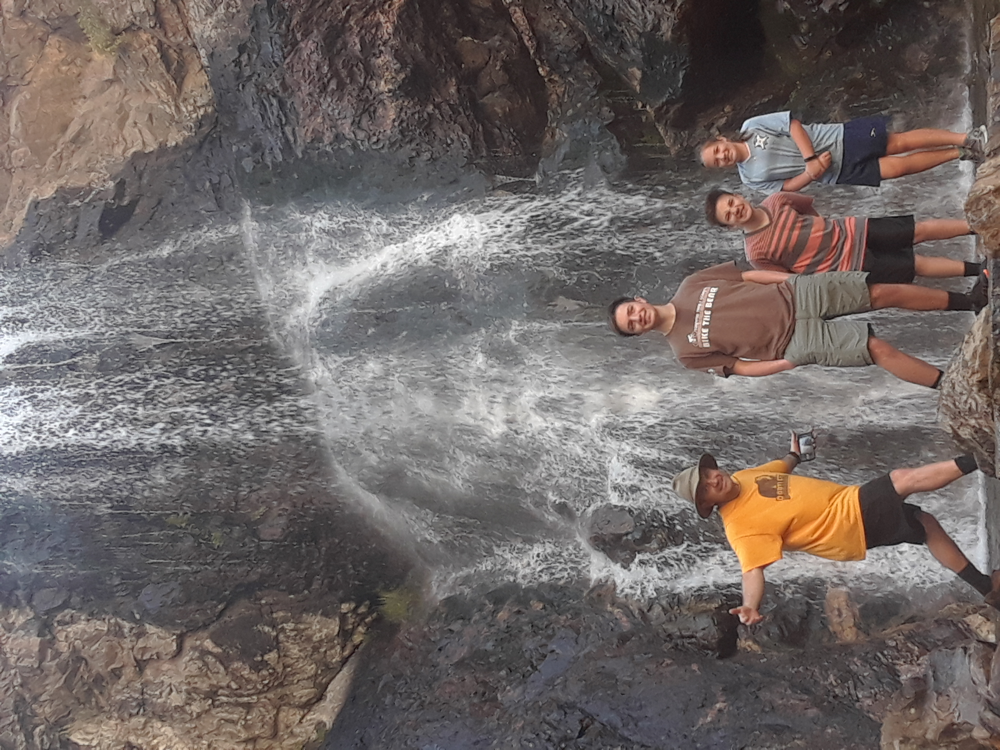
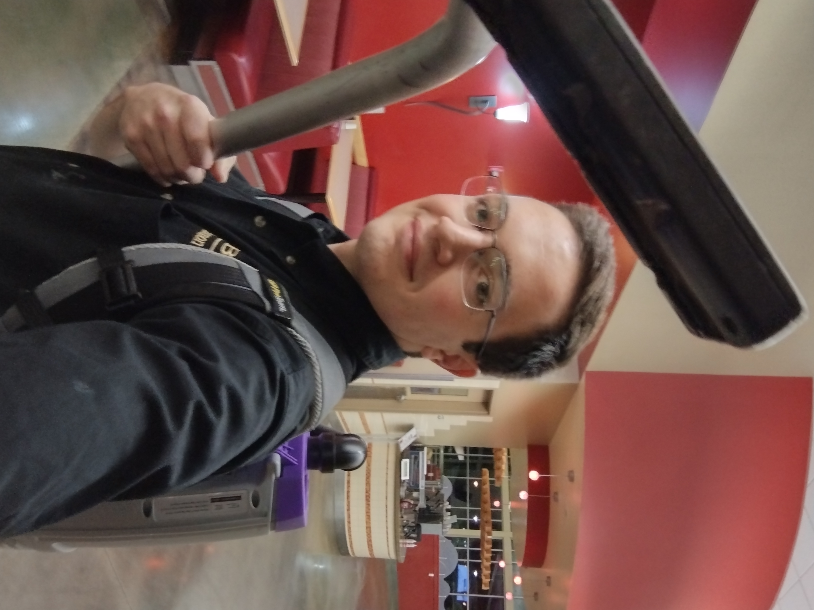
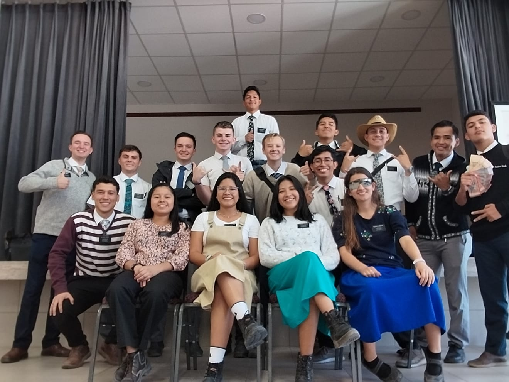

Hello! How're you? My name is Conner Hibbert. It's good to meet you! Here are some things about me.
I am the oldest of five children. I have two younger brothers and two younger sisters. One is on his mission right now in Peru. The rest of my siblings are in school. One just finished participating in his high school play. My parents are from Salt Lake City, Utah, and Adel, Georgia.
I attended Mountain View Elementary School, then North Layton Jr. High, and then attended NUAMES, which is a charter school that Weber State University does in Davis county. Now I am a cybersecurity student at BYU. I've only been a student here for a little over two months, but I've enjoyed it and am excited to continue studying!

The first job I ever had was mowing lawns in the neighborhood. I had several neighbors who would pay me and my brother 20$ to mow and edge their lawn. When I was 14 I got a job at the lindquist baseball field in Odgen where the Raptors play. When I was 16 I got a job at PizzaPieCafe in Layton where I worked for two years. When I returned from my mission I got a job at the Cannon Commons here at BYU, where I currently work.
I served a mission in Bolivia Santa Cruz. I served there between October 2022 to November 2024. I went to the Provo MTC for a few weeks to learn Spanish, which I taught in during the mission. My mission president was Presidente Spitale, from Córdoba Argentina. I had missionary companions from Bolivia, Chile, Colombia Peru, Argentina, and the US. I served in three different cities, and was the mission technology specialist for seven months.
 